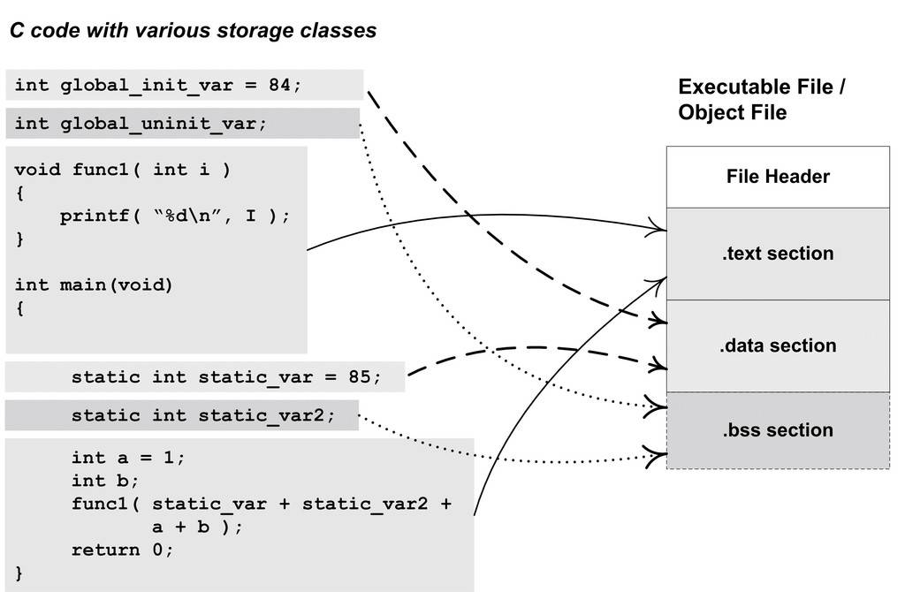
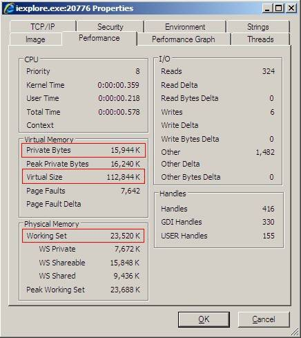

3.2 目标文件是什么样的
我们大概能猜到，目标文件中的内容至少有编译后的机器指令代码、数据。没错，除了这些内容以外，目标文件中还包括了链接时所须要的一些信息，比如符号表、调试信息、字符串等。一般目标文件将这些信息按不同的属性，以"节"（Section）的形式存储，有时候也叫"段"（Segment），在一般情况下，它们都表示一个一定长度的区域，基本上不加以区别，唯一的区别是在ELF的链接视图和装载视图的时候，后面会专门提到。在本书中，默认情况下统一将它们称为"段"。
程序源代码编译后的机器指令经常被放在代码段（Code Section）里，代码段常见的名字有".code"或".text"；全局变量和局部静态变量数据经常放在数据段（Data Section），数据段的一般名字都叫".data"。让我们来看一个简单的程序被编译成目标文件后的结构，如图3-1所示。

图3-1 程序与目标文件
假设图3-1的可执行文件（目标文件）的格式是ELF，从图中可以看到，ELF文件的开头是一个"文件头"，它描述了整个文件的文件属性，包括文件是否可执行、是静态链接还是动态链接及入口地址（如果是可执行文件）、目标硬件、目标操作系统等信息，文件头还包括一个段表（Section Table），段表其实是一个描述文件中各个段的数组。段表描述了文件中各个段在文件中的偏移位置及段的属性等，从段表里面可以得到每个段的所有信息。文件头后面就是各个段的内容，比如代码段保存的就是程序的指令，数据段保存的就是程序的静态变量等。
对照图3-1来看，一般C语言的编译后执行语句都编译成机器代码，保存在.text段；已初始化的全局变量和局部静态变量都保存在. data段；未初始化的全局变量和局部静态变量一般放在一个叫."bss"的段里。我们知道未初始化的全局变量和局部静态变量默认值都为0，本来它们也可以被放在.data段的，但是因为它们都是0，所以为它们在.data段分配空间并且存放数据0是没有必要的。程序运行的时候它们的确是要占内存空间的，并且可执行文件必须记录所有未初始化的全局变量和局部静态变量的大小总和，记为.bss段。所以.bss段只是为未初始化的全局变量和局部静态变量预留位置而已，它并没有内容，所以它在文件中也不占据空间。
BSS历史
BSS（Block Started by Symbol）这个词最初是UA-SAP汇编器（United Aircraft Symbolic Assembly Program）中的一个伪指令，用于为符号预留一块内存空间。该汇编器由美国联合航空公司于20世纪50年代中期为IBM 704大型机所开发。
后来BSS这个词被作为关键字引入到了IBM 709和7090/94机型上的标准汇编器FAP（Fortran Assembly Program），用于定义符号并且为该符号预留给定数量的未初始化空间。
Unix FAQ section 1.3（http://www.faqs.org/faqs/unix-faq/faq/part1/section-3.html）里面有Unix和C语言之父Dennis Rithcie对BSS这个词由来的解释。
总体来说，程序源代码被编译以后主要分成两种段：程序指令和程序数据。代码段属于程序指令，而数据段和.bss段属于程序数据。
很多人可能会有疑问：为什么要那么麻烦，把程序的指令和数据的存放分开？混杂地放在一个段里面不是更加简单？其实数据和指令分段的好处有很多。主要有如下几个方面。
- 一方面是当程序被装载后，数据和指令分别被映射到两个虚存区域。由于数据区域对于进程来说是可读写的，而指令区域对于进程来说是只读的，所以这两个虚存区域的权限可以被分别设置成可读写和只读。这样可以防止程序的指令被有意或无意地改写。
- 另外一方面是对于现代的CPU来说，它们有着极为强大的缓存（Cache）体系。由于缓存在现代的计算机中地位非常重要，所以程序必须尽量提高缓存的命中率。指令区和数据区的分离有利于提高程序的局部性。现代CPU的缓存一般都被设计成数据缓存和指令缓存分离，所以程序的指令和数据被分开存放对CPU的缓存命中率提高有好处。
- 第三个原因，其实也是最重要的原因，就是当系统中运行着多个该程序的副本时，它们的指令都是一样的，所以内存中只须要保存一份该程序的指令部分。对于指令这种只读的区域来说是这样，对于其他的只读数据也一样，比如很多程序里面带有的图标、图片、文本等资源也是属于可以共享的。当然每个副本进程的数据区域是不一样的，它们是进程私有的。不要小看这个共享指令的概念，它在现代的操作系统里面占据了极为重要的地位，特别是在有动态链接的系统中，可以节省大量的内存。比如我们常用的Windows Internet Explorer 7.0运行起来以后，它的总虚存空间为112 844 KB，它的私有部分数据为15 944 KB，即有96 900 KB的空间是共享部分（数据来源见图3-2）。如果系统中运行了数百个进程，可以想象共享的方法来节省大量空间。关于内存共享的更为深入的内容我们将在装载这一章探讨。

图3-2 Process Explorer 下查看进程IExplorer.exe的进程信息